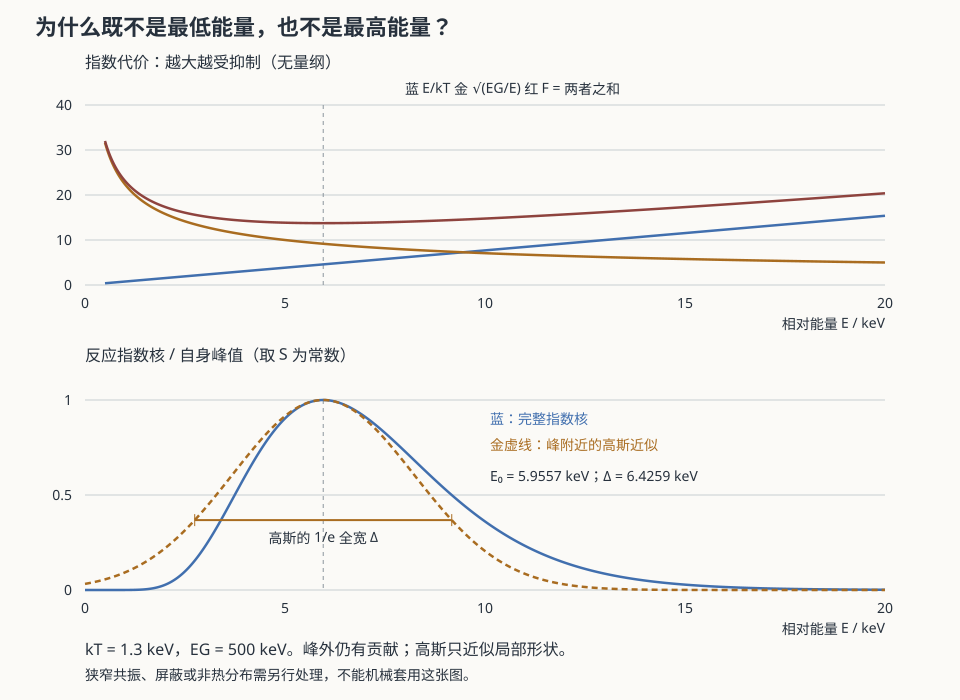

天体 III · 核合成与元素起源
对标：Clayton《Principles of Stellar Evolution and Nucleosynthesis》/ Rolfs & Rodney / B²FH (1957) ｜ 前置：atom-01（核）、aqm-02（隧穿与截面）、ap-02 你身体里的碳来自渐近巨星支恒星，氧来自大质量恒星的核心，铁来自超新星，金来自中子星并合——元素周期表是一份宇宙履历。本页讲清各种元素在何处、以何种机制被造出来。

1. 为什么恒星能烧起来：Gamow 峰
经典困难：太阳中心 \(T\sim1.5\times10^7\) K 对应 \(k_BT\sim1.3\) keV，而两个质子的库仑势垒约 1 MeV——热运动能量差了三个数量级，经典上根本不可能反应。
量子隧穿解围（aqm-02）。穿透因子
与 Maxwell 分布 \(e^{-E/k_BT}\) 相乘，得到一个尖锐的峰：
Gamow 峰的两个后果： - 反应只发生在能量分布的高能尾巴上——是极少数粒子的隧穿撑起了整颗恒星； - 产能率对温度极其敏感：\(\epsilon\propto T^n\)，pp 链 \(n\approx4\)，CNO 循环 \(n\approx17\)。
\(n\approx17\) 的意义：温度稍高，CNO 产能率暴涨 → 大质量恒星核心必然对流（能流太集中，辐射输运扛不住，🔗 ap-02、fl-04）。一个核物理指数，决定了恒星的内部结构。
2. 氢燃烧的两条路
pp 链（主导 \(\lesssim1.5M_\odot\)）：\(4p\to{}^4\mathrm{He}+2e^++2\nu_e\)，释放 26.7 MeV。
限速步是第一步 \(p+p\to d+e^++\nu_e\)——它需要弱相互作用（一个质子变中子）。正是这个"弱"字使太阳能燃烧百亿年：若强作用即可完成，太阳早已烧尽。基本相互作用的强度层级，直接设定了恒星的寿命尺度——进而设定了生命演化可用的时间。
CNO 循环（主导 \(\gtrsim1.5M_\odot\)）：碳氮氧作催化剂，净反应相同。需要更高温度（库仑势垒更高），但对温度更敏感。
中微子：pp 链每秒从太阳带走约 2% 的能量。太阳中微子问题（观测流量仅为预期的三分之一）最终由中微子振荡解决（atom-01）——天体物理反过来发现了粒子物理的新现象，这是本站两个板块最漂亮的一次握手。
3. 更重元素：从氦到铁
3α 过程：\(3\,{}^4\mathrm{He}\to{}^{12}\mathrm{C}\)。
这里有一个著名的物理学故事：由于质量数 5 和 8 没有稳定核，氦聚变必须"三体"同时发生，概率极低。Hoyle 由"宇宙中确实存在碳"反推出 \({}^{12}\)C 必有一个约 7.65 MeV 的共振态——随后被实验证实。这是人择式推理做出成功预言的罕见范例（其方法论地位仍有讨论【争】，但预言本身完全正确）。
后续燃烧：碳燃烧、氖光解、氧燃烧、硅燃烧（准平衡下向铁族聚集）。
铁峰是终点：\(^{56}\)Fe 附近每核子结合能最大。 - 更轻的核聚变放能； - 更重的核聚变吸能。 所以恒星核心一旦成铁，产能立即停止 → 失去压强支撑 → 坍缩（ap-04）。
4. 铁之后：中子俘获
超越铁只能靠中子俘获（无库仑势垒），按俘获与 β 衰变的快慢分两类：
| 过程 | 中子通量 | 路径 | 场所 |
|---|---|---|---|
| s 过程（慢） | 低 | 沿稳定谷缓行 | AGB 星壳层（ap-02）；产生 Sr、Ba、Pb 等 |
| r 过程（快） | 极高 | 冲入极端中子丰区再衰变回来 | 见下 |
r 过程场所曾长期存疑【已大幅推进】：2017 年双中子星并合事件 GW170817 同时被引力波与电磁波观测到（gr-03、ap-05），其千新星光变曲线与光谱显示了大量重元素快速合成的证据——这被广泛认为确认了中子星并合是 r 过程的重要场所（是否为唯一或主要场所仍在研究【争】）。
这是多信使天文学的第一个重大成果：引力波 + 电磁波联合，解决了一个存在半个世纪的核天体物理问题。
5. 大爆炸核合成（BBN）
宇宙最初三分钟（cosmo-02）产生：约 75% 氢、25% 氦-4（质量比），以及痕量的 D、³He、⁷Li。
BBN 是宇宙学最强的定量检验之一：氘丰度对重子密度极其敏感，由 BBN 推出的 \(\Omega_b\) 与 CMB 独立给出的值高度一致——两个完全不同的物理过程、相差数十万年的时期，给出同一个答案。
遗留问题：锂-7 丰度的观测值约为预言的三分之一（"锂问题"）——至今未解决【争，可能涉及恒星内部混合或新物理】。
6. 练习与要点
例 1（太阳的燃料账） 太阳每秒把约 6×10¹¹ kg 氢变成氦，亏损质量约 4×10⁹ kg → \(L=\Delta mc^2/\Delta t\approx3.8\times10^{26}\) W ✓。核心 10% 的氢可用 → 寿命约 100 亿年。
例 2（元素来源速查） H、He：大爆炸；C、N：AGB 星；O、Ne、Mg、Si：大质量恒星与 II 型超新星；Fe 峰：主要来自 Ia 型超新星；Au、Pt、U：中子星并合（r 过程）。——一副由核物理写成的宇宙化学史。
例 3（为什么金子贵） r 过程需要极端条件（中子星并合），事件率低、产量有限。黄金的稀缺性最终追溯到核物理与并合率，而非地质学。\(\blacksquare\)
下一页：铁核坍缩之后会发生什么？答案取决于量子简并压能否顶住引力——这把 sm-03 的量子统计直接推到了天文尺度。